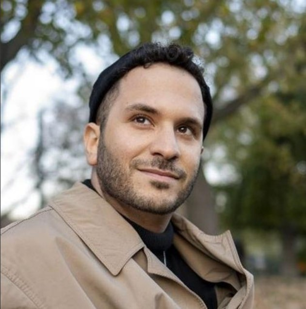

Fadi Al-Salti
Software developer and DevOps Engineer at HDI. Something of an IT generalist and a lifelong lerner. Based in Berlin 👨💻
👉 eng_fadi77@hotmail.com
Tech stack
Python, Bashscripting, SQL, some JS
Django, Flask
Docker, ECS, Kubernetes
Currently learning: More Kubernetes, Microservices architecture, API design
Work History
🚧 DevOps Engineer | HDI Global
01/2023 - Present | Berlin and Hannover
- Led the transition from managed servers to a container orchestration solution, doubling deployment
speed, and reducing costs significantly.
- Develop, operate and monitor CICD pipelines for data loading, transformation and deployment using
the Azure DevOps platform.
- Expand and operate infrastructure using IaC tools (terraform, ansible, AWS ECS etc.)
- Co-developed a fullstack Django internal application that the team uses to run comprehensive
database comparisons.
- DB-Admin in Snowflake platform, managing data object permissions to ensure secure and efficient
data access for the main Datawarehouse product (since June 2023).
🚧 IT Consultant | CapeVision GmbH
10/2021 - 11/2022 | Berlin
- Developed and optimized PowerShell and Python automation scripts for ETL processes, reporting and
monitoring.
- Developed a desktop application using Tkinter framework in Python. The app is connected to MSSQL
server and performs a variety of CRUD operations to manage the technical profiles of clients.
- Developed or optimized Excel and Xml-transformation (XSLT) solutions for the transformation and
delivery of e-invoices.
- IT Operations and constant contact with customers for testing, implementing and troubleshooting
solutions.
🚧 Scientific Researcher / PhD Student | Leibniz Institute of Photonic Technology
05/2017 - 09/2019 | Jena
Education
🏫 Master of Arts in European Studies | Cife
10/2019 - 08/2020 | Berlin and Nice
🏫 Master of Science in Optics & Photonics | Aix-Marseille Université and KIT
10/2014 - 11/2016 | Marseille, Karlsruhe and Freiburg
🏫 Bachelor of Engineering in Telecommunication and Electronic Engineering | Damascus Unviersity
09/2006 - 09/2012 | Damascus